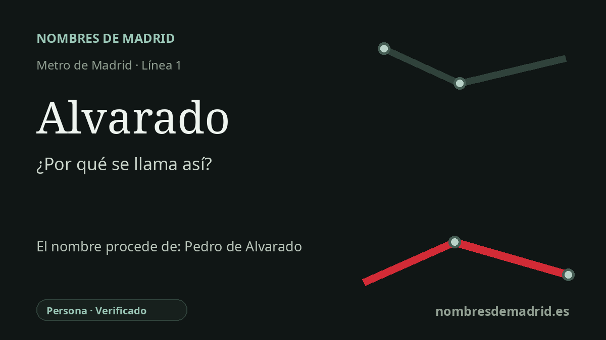

Publicado el · Investigación de Nombres de Madrid · Cómo verificamos cada origen · 8 fuentes consultadas
Respuesta rápida
La estación de Alvarado toma su nombre de la calle de Alvarado, junto a la parada de la línea 1 en Tetuán. El nombre de la calle remite a Pedro de Alvarado y Contreras, conquistador del siglo XVI vinculado a la conquista de México y Guatemala.
La historia del nombre
La estación de Alvarado toma su nombre de su entorno urbano inmediato. La ficha histórica de Metro de Madrid sitúa la estación bajo la calle de Bravo Murillo, cerca de la calle de Alvarado, y la tradición sobre los nombres de las estaciones identifica esa calle como el origen del nombre del Metro.
La persona que hay detrás del nombre de la calle es Pedro de Alvarado y Contreras, conquistador español del siglo XVI. Sirvió junto a Hernán Cortés en la conquista de México-Tenochtitlan y más tarde fue gobernador y capitán general de Guatemala, donde sus campañas transformaron la historia de Guatemala y de regiones vecinas mediante conquista, sometimiento forzoso y dominio colonial.
El nombre de Alvarado también está ligado a uno de los episodios más violentos de la conquista de México: la matanza durante la fiesta de Tóxcatl en el Templo Mayor en 1520. La historiografía moderna trata el episodio como un hecho discutido en sus detalles y motivaciones, pero las crónicas tempranas y los estudios posteriores identifican repetidamente a Alvarado como el mando español más directamente asociado con la matanza.
La estación madrileña pertenece al primer gran crecimiento hacia el norte de la línea 1. Se inauguró el 6 de marzo de 1929 en la prolongación Cuatro Caminos-Tetuán, cuando el extremo norte de la línea llegaba a una zona todavía marcada por el antiguo Tetuán de las Victorias y por el municipio de Chamartín de la Rosa. La documentación del archivo de Metro recoge además un plano de replanteo de la estación de 1926 que ya empleaba el nombre Alvarado.
La etimología es, por tanto, sólida, pero conviene contarla con cuidado. La estación no se llama así por un accidente local del terreno llamado alvarado; es un nombre de estación tomado de una calle, cuyo referente profundo es una persona histórica. El relato público tampoco debería ser celebratorio: Pedro de Alvarado es importante en la historia, pero su legado es inseparable de la violencia de la conquista en México y Centroamérica.